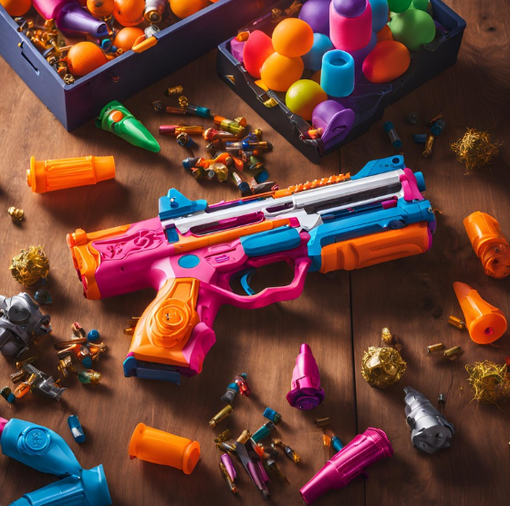

Why Customize Your Nerf Blaster?
Customizing your Nerf blaster not only enhances its appearance but also improves its performance on the battlefield. Whether it's painting your blaster with bold colors, adding tactical attachments, or boosting its firing range, personalization is the key to standing out.
DIY Ideas for Your Nerf Blaster
Here are some creative DIY modifications you can try:
- Paint Job: Use durable spray paint to create camo patterns or neon designs.
- Attachments: Add scopes, grips, or barrels for better aesthetics and functionality.
- Power Upgrades: Upgrade the internal spring or motor for increased firing power.
- LED Lights: Install LED strips for an eye-catching glow during night battles.
Showcase Your Custom Blaster
Share your creations with the Nerf community! Join online forums and local events to display your masterpiece and get inspired by others.